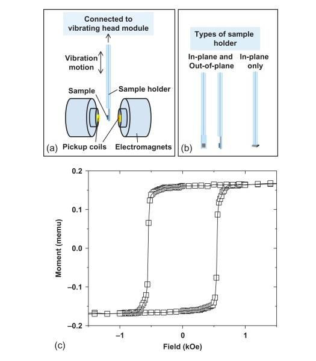

Nb3Sn is a superconduting material when cooled below 18 K. Small samples of length around 5 mm
and diameter around 1 mm are measured in quantum Vibrating Sample Magnetometer (VSM). The measurement
scheme is shown below:

For more reading click here.